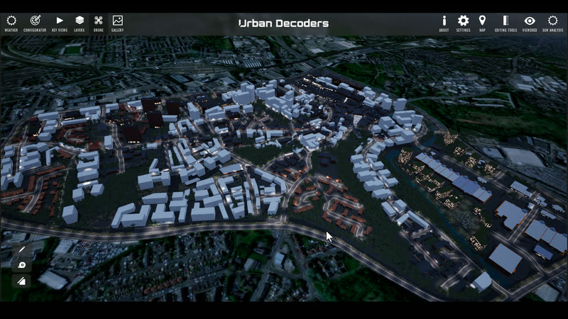
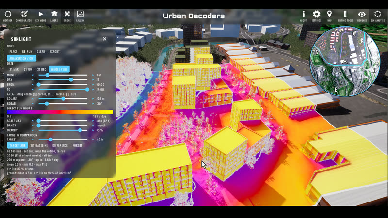
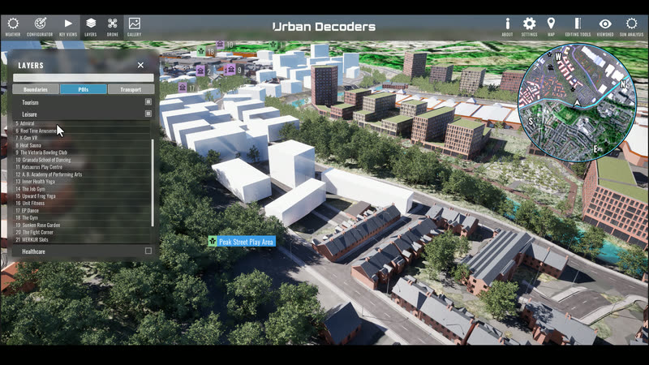
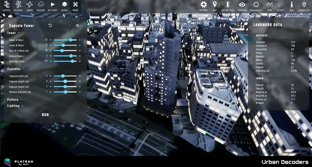

One base. Options that combine.
A twin that grows with the decision.
Every twin starts from the same context model and web explorer. Options are independent modules you add in any order, so a site study can stay small and a city twin can run everything, live. This page lists what the twin can do, how it gets built and delivered, and what is in the base.
What the twin can do.
Twenty tools that ship inside the explorer, recorded in our Stockport East and Tokyo twins. Hover a tile to play it. Every tool runs on the same georeferenced base, so a measurement, a shadow and a bus route all agree.













The model, the cleaned data and the site archive are handed over. Host it with us, on your own domain, or inside the authority's estate.
CCTV is processed to anonymised counts, never faces. Every feed sits under the data owner's terms. Built for public-sector procurement, security review and audit.
A maintenance agreement keeps the twin synced to the plan and the feeds after launch, so it never drifts from the thing it represents.
The context model and web explorer.
A georeferenced base in a stated CRS, cleaned from GIS, open data and whatever you already hold, served as a web explorer anyone can open from a link. Everything else sits on top of it.
- Context layers. Terrain, building footprints with heights, parcels, transport networks and planning constraints, in EPSG:27700 for UK work or the CRS you state.
- Site or scheme massing. Your masterplan or a first capacity model placed on the base, with GFA, coverage and mix reported.
- Web explorer. Layers, storylines and points of interest, no install, any device, hosted on your domain or ours.
- Custom markers and icons matching your brand or the authority's map style.
- Feedback endpoint wired to the mailbox you nominate.
- Full handover. The model, the data and the site archive are yours. No third-party lock-in.
Send us a site boundary. We'll send back a scope.
A GeoJSON, a DXF or a red-line PDF is enough to start. We come back with a tier, a timeline and the layers your decision needs.